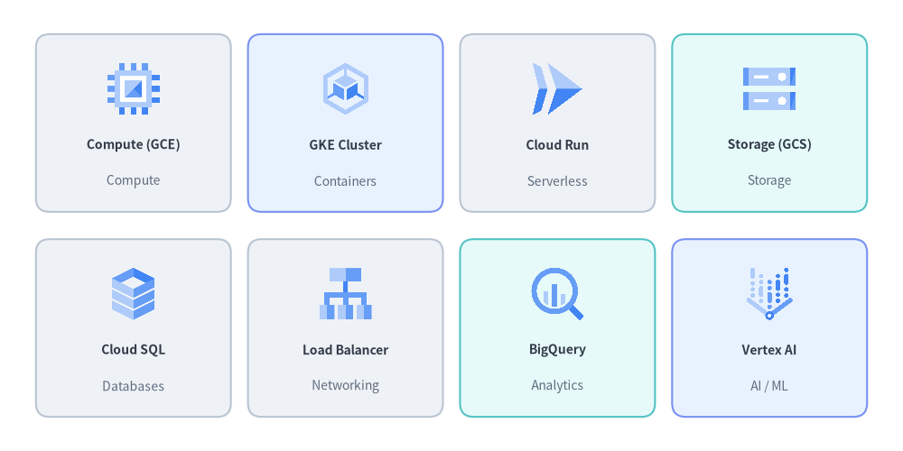
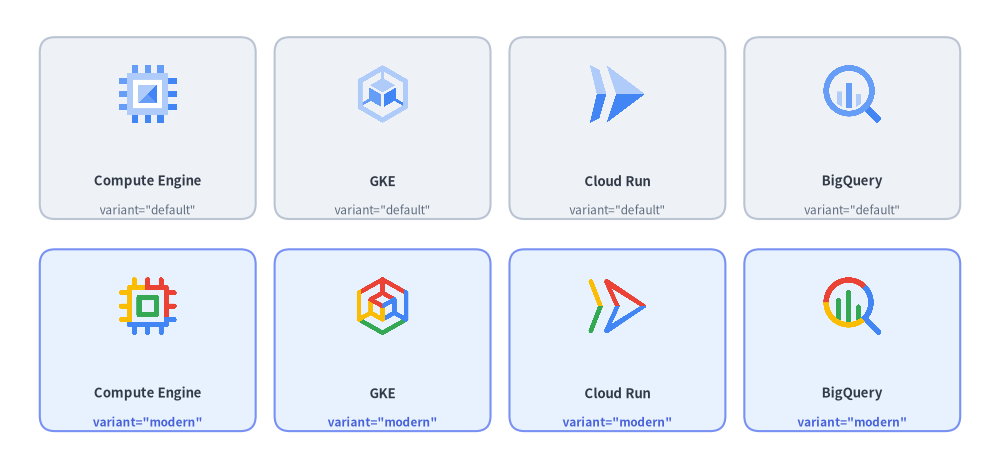
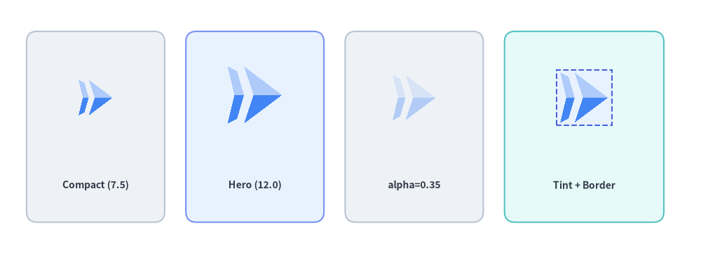
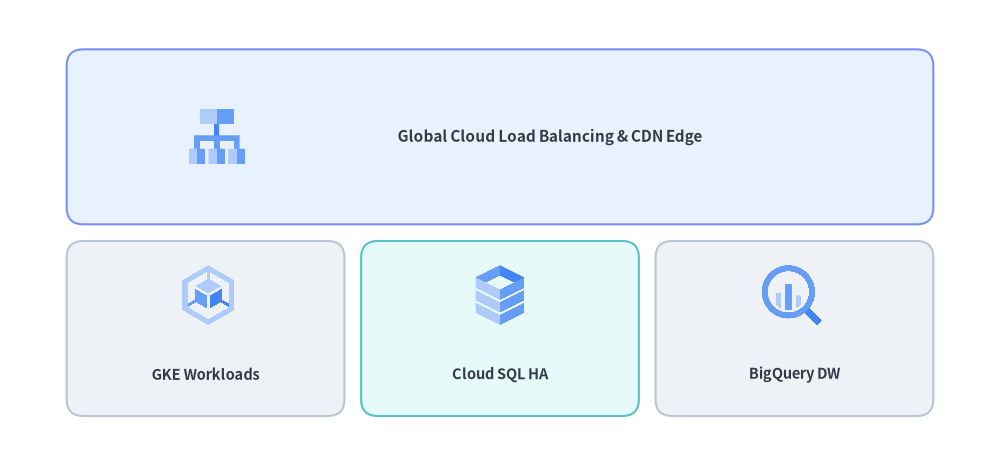
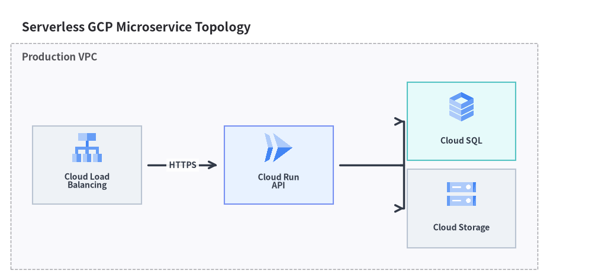

Google Cloud (GCP) Icons
Drawlib provides over 250 high-resolution (512×512) Google Cloud Platform (GCP) architecture icons via drawlib.icons.gcp, natively authored in Drawlib. Every service defaults to the unified 3-Tone Blue (variant="default") technical palette so full-stack topologies remain visually cohesive, while 19 Core Products and 26 Category icons also offer the Google 4-Color (variant="modern") palette.
1. Categorized GCP Icon Showcase
Every GCP service is available as gcp.<service_name>(xy, width, *, style, variant="default"):

Source Code
from drawlib.canvas import save, setup
from drawlib.icons import gcp
from drawlib.shapes import rectangle
from drawlib.styles import Styles
from drawlib.text import text
setup(width=132, height=66)
row1 = [
("Compute (GCE)", "Compute", gcp.compute_engine, Styles.Neutral),
("GKE Cluster", "Containers", gcp.google_kubernetes_engine, Styles.PrimaryNeutral),
("Cloud Run", "Serverless", gcp.cloud_run, Styles.Neutral),
("Storage (GCS)", "Storage", gcp.cloud_storage, Styles.SecondaryNeutral),
]
row2 = [
("Cloud SQL", "Databases", gcp.cloud_sql, Styles.Neutral),
("Load Balancer", "Networking", gcp.cloud_load_balancing, Styles.Neutral),
("BigQuery", "Analytics", gcp.bigquery, Styles.SecondaryNeutral),
("Vertex AI", "AI / ML", gcp.vertex_ai, Styles.PrimaryNeutral),
]
for row_idx, items in enumerate([row1, row2]):
cy = 48 if row_idx == 0 else 18
for col_idx, (title, cat, icon_fn, card_st) in enumerate(items):
cx = 19.5 + col_idx * 31
rectangle((cx, cy), width=28.5, height=26, style=card_st.patch(shape_r=2))
icon_fn((cx, cy + 5.0), width=8.5, style=Styles.Primary)
text((cx, cy - 3.2), title, style=Styles.DarkBold.patch(text_size=10.0))
text((cx, cy - 8.5), cat, style=Styles.Muted.patch(text_size=10.0))
save()
1.1. Major GCP Icon Categories
| Category | Representative drawlib.icons.gcp Functions |
|---|---|
| Compute | compute_engine, app_engine, batch, bare_metal_solutions, vmware_engine |
| Containers & Serverless | google_kubernetes_engine, cloud_run, cloud_functions, anthos |
| Storage | cloud_storage, filestore, persistent_disk, hyperdisk |
| Databases | cloud_sql, cloud_spanner, alloydb, bigtable, firestore, memorystore |
| Networking | virtual_private_cloud, cloud_load_balancing, cloud_cdn, cloud_dns, cloud_nat, cloud_interconnect |
| Data & Analytics | bigquery, pubsub, dataflow, dataproc, cloud_composer, looker |
| AI & Machine Learning | vertex_ai, ai_hypercomputer, automl, document_ai, cloud_vision_api, speech_to_text |
| Security & Operations | cloud_armor, identity_and_access_management, secret_manager, key_management_service, security_command_center, cloud_monitoring, cloud_logging, cloud_build, artifact_registry |
1.2. Color Variants: variant="default" (3-Tone Blue) vs. variant="modern" (4-Color)
All 250 GCP icons provide variant="default" (unified 3-tone blue #4285F4 / #669DF6 / #AECBFA), which is recommended when combining core services with networking, security, or specialized services so the entire diagram shares a consistent color language. For the 19 Core Products and 26 Category icons, you can pass variant="modern" to render the Google 4-color multi-color artwork:
from drawlib.canvas import save, setup
from drawlib.icons import gcp
from drawlib.shapes import rectangle
from drawlib.styles import Styles
from drawlib.text import text
setup(width=132, height=62)
services = [
("Compute Engine", gcp.compute_engine),
("GKE", gcp.google_kubernetes_engine),
("Cloud Run", gcp.cloud_run),
("BigQuery", gcp.bigquery),
]
for col_idx, (label, icon_fn) in enumerate(services):
cx = 19.5 + col_idx * 31
# Top row: default (3-tone blue)
rectangle((cx, 45), width=28.5, height=24, style=Styles.Neutral.patch(shape_r=2))
icon_fn((cx, 49.5), width=8.5, style=Styles.Primary, variant="default")
text((cx, 38.0), f"{label}", style=Styles.DarkBold.patch(text_size=9.5))
text((cx, 34.2), 'variant="default"', style=Styles.Muted.patch(text_size=8.5))
# Bottom row: modern (4-color)
rectangle((cx, 17), width=28.5, height=24, style=Styles.PrimaryNeutral.patch(shape_r=2))
icon_fn((cx, 21.5), width=8.5, style=Styles.Primary, variant="modern")
text((cx, 10.0), f"{label}", style=Styles.DarkBold.patch(text_size=9.5))
text((cx, 6.2), 'variant="modern"', style=Styles.PrimaryBold.patch(text_size=8.5))
save()

1.3. Dynamic Icon Lookup by Name (gcp_icon)
When the icon name is determined dynamically at runtime (for example, loaded from a configuration file or dictionary), you can invoke the low-level gcp_icon() helper or resolve functions from drawlib.icons.gcp:
from drawlib.icons import gcp, gcp_icon
from drawlib.styles import Styles
# Render a GCP service icon by string identifier (and optional variant)
gcp_icon((50, 25), width=10.0, name="bigquery", style=Styles.Primary, variant="modern")
# Or look up the generated service function dynamically on the gcp module
getattr(gcp, "compute_engine")((80, 25), width=10.0, style=Styles.Primary, variant="default")
2. Sizing, Opacity, Tinting & Border Framing (style.image_*)
Because gcp.<service_name>(xy, width, *, style) renders normalized 512×512 RGBA PNG assets through the canvas image() engine, it supports all image_* styling and transform attributes on Style:
Style Attribute |
Type | Default | Visual Effect on GCP Icon |
|---|---|---|---|
alpha |
float |
1.0 |
Fades the icon opacity (0.35 is ideal for standby/decommissioned replicas). |
image_tint_color |
Color | tuple | str |
None |
Fills transparent background pixels behind the icon artwork with a solid color (Dimage.fill()). |
image_border_color |
Color | tuple | str |
(0, 0, 0) |
Stroke color of the rectangular border frame around the icon bounding box. |
image_border_width |
float |
0 |
Border stroke width in points (> 0 draws a frame around the icon). |
image_border_style |
"solid" | "dashed" | "dotted" | "dashdot" |
"solid" |
Dash pattern of the icon border frame. |
angle, halign, valign |
float, str, str |
0.0, "center", "center" |
Rotates or shifts the icon anchor point on the canvas. |
| Diagram Role | Recommended width |
Typical Styling |
|---|---|---|
| Primary Gateway / Hero Service | 11.0 – 14.0 units |
style=Styles.Primary inside a Styles.PrimaryNeutral card |
| Standard Service Node | 8.5 – 10.5 units |
style=Styles.Primary inside a Styles.Neutral card |
| Embedded Pod / Sub-Node | 7.0 – 8.0 units |
style=Styles.Primary inside a compact subnet card |
| Decommissioned / Standby Node | 8.5 – 10.0 units |
style=Styles.Primary.patch(alpha=0.35) |
from drawlib.canvas import save, setup
from drawlib.icons import gcp
from drawlib.shapes import rectangle
from drawlib.styles import Colors, Styles
from drawlib.text import text
setup(width=132, height=48)
# 1. Compact Size (width=7.5)
rectangle((18, 24), width=26, height=36, style=Styles.Neutral.patch(shape_r=2))
gcp.cloud_run((18, 29.5), width=7.5, style=Styles.Primary)
text((18, 13), "Compact (7.5)", style=Styles.DarkBold.patch(text_size=10.0))
# 2. Hero Size (width=12.0)
rectangle((48, 24), width=26, height=36, style=Styles.PrimaryNeutral.patch(shape_r=2))
gcp.cloud_run((48, 30.0), width=12.0, style=Styles.Primary)
text((48, 13), "Hero (12.0)", style=Styles.DarkBold.patch(text_size=10.0))
# 3. Standby Opacity (alpha=0.35)
rectangle((78, 24), width=26, height=36, style=Styles.Neutral.patch(shape_r=2))
gcp.cloud_run((78, 29.5), width=9.5, style=Styles.Primary.patch(alpha=0.35))
text((78, 13), "alpha=0.35", style=Styles.DarkBold.patch(text_size=10.0))
# 4. Background Tint + Dashed Border (image_tint_color & image_border_*)
rectangle((110, 24), width=30, height=36, style=Styles.SecondaryNeutral.patch(shape_r=2))
framed_style = Styles.Primary.patch(
image_tint_color=Colors.Primary1,
image_border_color=Colors.Primary,
image_border_width=1.5,
image_border_style="dashed",
)
gcp.cloud_run((110, 29.5), width=10.5, style=framed_style)
text((110, 13), "Tint + Border", style=Styles.DarkBold.patch(text_size=10.0))
save()

3. Using GCP Icons in Diagrams
You can integrate GCP icons into technical illustrations at three levels of abstraction depending on your layout needs:
| Approach | Best For | How Icons Are Placed |
|---|---|---|
1. Standalone gcp.<service>() |
Custom canvas layouts, bespoke cards, annotations | Call gcp.<service>((x, y), width=...) directly over rectangle() cards. |
2. Paired with GridLayout |
Tiered architecture matrices, service catalogs | Draw matrix background cells with GridLayout, then overlay gcp.<service>() at cell centers. |
3. Inside ArchitectureDiagram |
Connected VPC topologies, subnets, fan-out routing | Pass icon=GcpIcon.<SERVICE> to Node(...) for automatic card layout and orthogonal wire routing. |
3.1. Overlaying GCP Icons on GridLayout Matrix Tiers
from drawlib.canvas import save, setup
from drawlib.icons import gcp
from drawlib.smartarts import GridLayout
from drawlib.styles import Styles
setup(width=120, height=56)
# 1. Draw a 3-column x 2-row GridLayout matrix
grid = GridLayout(
num_column=3,
num_row=2,
style=Styles.Neutral.patch(shape_r=2),
text_style=Styles.DarkBold.patch(text_size=10.5),
)
# Top header row spanning all 3 columns
grid.add(
position=(0, 1),
width=3,
height=1,
text="Global Cloud Load Balancing & CDN Edge",
style=Styles.PrimaryNeutral.patch(shape_r=2),
text_style=Styles.DarkBold.patch(text_size=11.0, xy_shift=(6, 0)),
)
# Bottom 3 service cells (shift labels down to make room for icons)
lbl_style = Styles.DarkBold.patch(text_size=10.5, xy_shift=(0, -5.5))
grid.add(position=(0, 0), width=1, height=1, text="GKE Workloads", text_style=lbl_style)
grid.add(
position=(1, 0),
width=1,
height=1,
text="Cloud SQL HA",
style=Styles.SecondaryNeutral.patch(shape_r=2),
text_style=lbl_style,
)
grid.add(position=(2, 0), width=1, height=1, text="BigQuery DW", text_style=lbl_style)
grid.draw(xy=(8, 6), width=104, height=44, margin=2.0)
# 2. Overlay GCP icons onto the grid cells
gcp.cloud_load_balancing((26, 39.5), width=7.5, style=Styles.Primary)
gcp.google_kubernetes_engine((25, 20.5), width=8.0, style=Styles.Primary)
gcp.cloud_sql((60, 20.5), width=8.0, style=Styles.Primary)
gcp.bigquery((95, 20.5), width=8.0, style=Styles.Primary)
save()

3.2. High-Level ArchitectureDiagram (Node & GcpIcon)
When connecting services with routed arrows and VPC/subnet boundary boxes, use ArchitectureDiagram with Node(..., icon=GcpIcon.<SERVICE>):
from drawlib.canvas import clear, save, setup
from drawlib.diagrams.architecture import ArchitectureDiagram, GcpIcon, Node, NodeGroup
from drawlib.styles import Styles
clear()
setup(width=136, height=64)
d = ArchitectureDiagram(
node_style=Styles.Primary,
node_text_style=Styles.DarkBold.patch(text_size=10.0),
edge_style=Styles.DarkBold,
edge_text_style=Styles.DarkBold.patch(text_size=10.0),
node_card_style=Styles.Neutral,
title="Serverless GCP Microservice Topology",
)
vpc = d.add(NodeGroup(title="Production VPC", padding=5.0), xy=(4.0, 4.0))
lb = vpc.add(
Node("Cloud Load\nBalancing", width=25, height=18, icon=GcpIcon.CLOUD_LOAD_BALANCING, icon_size=7.5),
xy=(12.0, 18.0),
)
run = vpc.add(
Node(
"Cloud Run\nAPI",
width=25,
height=18,
icon=GcpIcon.CLOUD_RUN,
icon_size=7.5,
card_style=Styles.PrimaryNeutral,
),
xy=(56.0, 18.0),
)
sql = vpc.add(
Node(
"Cloud SQL",
width=25,
height=18,
icon=GcpIcon.CLOUD_SQL,
icon_size=7.5,
card_style=Styles.SecondaryNeutral,
),
xy=(98.0, 28.0),
)
gcs = vpc.add(
Node("Cloud Storage", width=25, height=18, icon=GcpIcon.CLOUD_STORAGE, icon_size=7.5),
xy=(98.0, 8.0),
)
d.connect(lb, run, label="HTTPS", padding=1.5)
run.fork([sql, gcs], at_x=88.0, padding=1.5)
d.draw(xy=(4.0, 4.0))
save()

[!TIP] For AWS (
drawlib.icons.aws), Azure (drawlib.icons.azure), and Multi-Cloud & Original Cloud (drawlib.icons.cloud/original_cloud), see Icons Overview.